アニメ
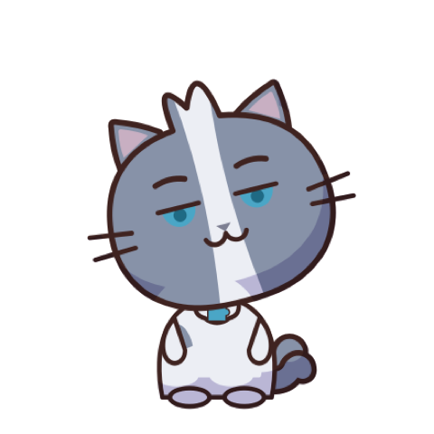
えっ、そういう意味だったの!? ってなるよ。覚えたて、使ってみよーっと！
縁側に集まった猫たちが、思い込みやすい言葉の謎を追いかけます。YouTube チャンネル「ことば猫」で公開中です。
新しい動画
NEW言葉の解説ショート
縦・1〜3 分1 本で 1 つの言葉を取り上げ、本当の意味と由来を紹介します。
ほかに：鍛錬・一粒万倍日・征伐・あみだくじ・鬼門・確信犯・判官贔屓・天邪鬼
平成38年
横長・連続ドラマ平成が終わらないまま平成38年を迎えた町、霧見町。オカルト研究会の猫たちが、町の不思議の元になった言葉を確かめます。
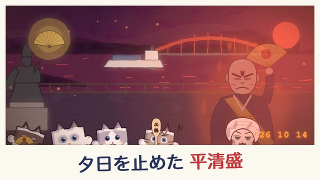
ことねこ名画座
横長・映画の解説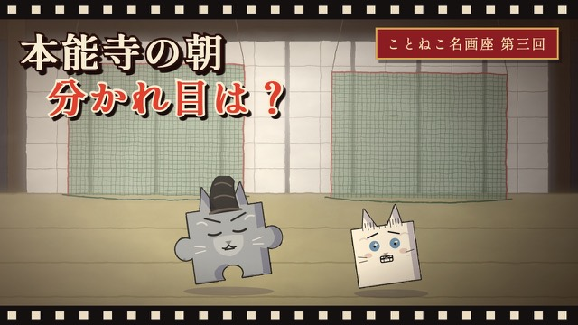
物知りの猫が司会を、好奇心の猫が聞き手を務めます。これまでの回は「羅生門」と「本能寺の変、あの朝の4人」です。
漫画
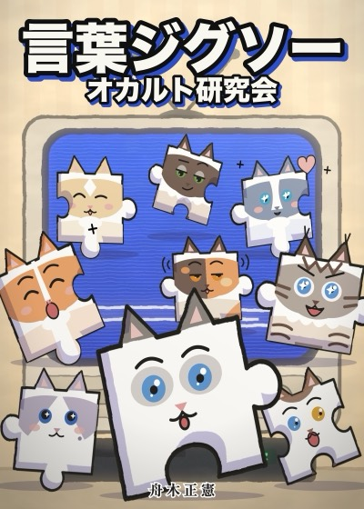
言葉ジグソー
オカルト研究会
Amazon Kindle・1 話読み切り
霧見町の中学校のオカルト研究会。猫たちが町で起きる不思議な出来事を追い、その元になった言葉や言い伝えの、本当の意味を確かめます。アニメ「平成38年」と同じお話を、漫画でじっくり読めます。
- 第2話 メリーさんの電話
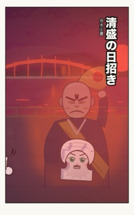
第3話 清盛の日招き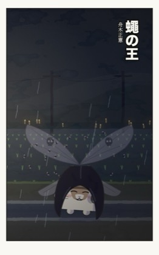
蠅の王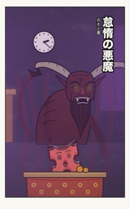
怠惰の悪魔
読みもの
動画で取り上げた言葉の、由来と歴史を掘り下げる note の記事です。史料に書かれていることと、物語として語られてきたことを分けて書きます。
- 「腹を割る」家康が秀吉に臣従する前夜秀吉は、何をしに家康の宿へ来たのか
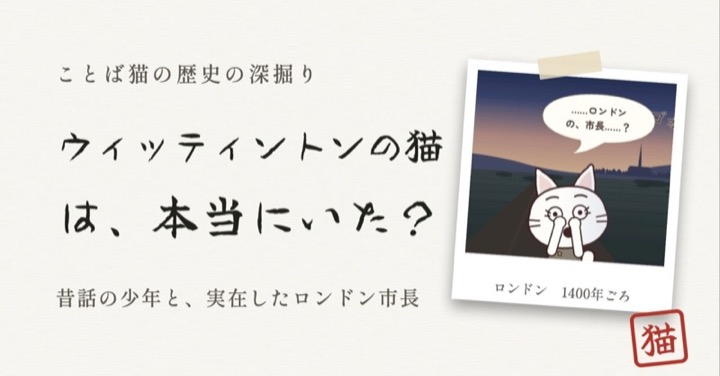
ディック・ウィッティントンの猫は実在した？1ペニーの子猫の昔話と、本当のロンドン市長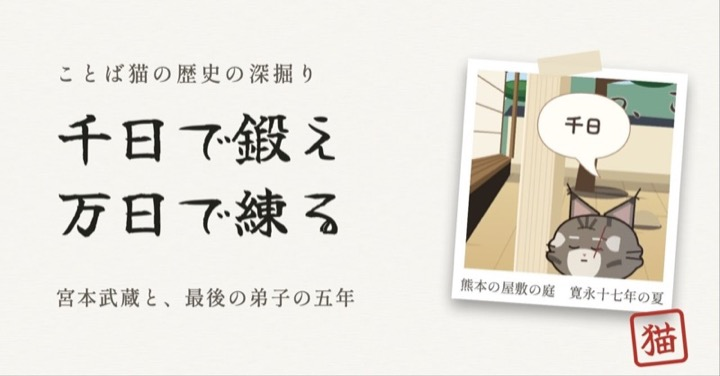
「鍛錬」は体を鍛えること？無敗の剣豪・宮本武蔵が、死の床で弟子へ渡した巻物
ほかに：「青天の霹靂」と、85歳の詩人の酔った筆／言葉ジグソー 1.4：遊びが 3 つになりました など
note で記事を読む言葉ジグソー
iPhone アプリ・4 つの遊び
- ことねこ夜行指 1 本で猫の行列を導き、化け猫を払って字を拾う。90 秒で夜明け
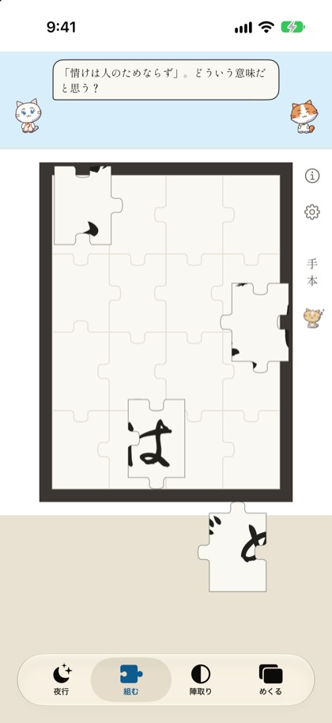
書を組む落ちてくる 16 枚のピースを半紙にはめる。自分の字でも組める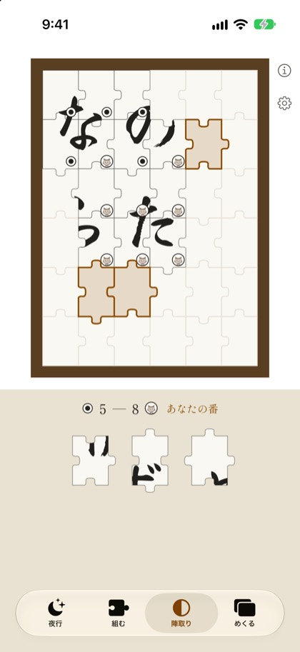
猫と陣取り6×6 に猫と交互に置き、挟んで返す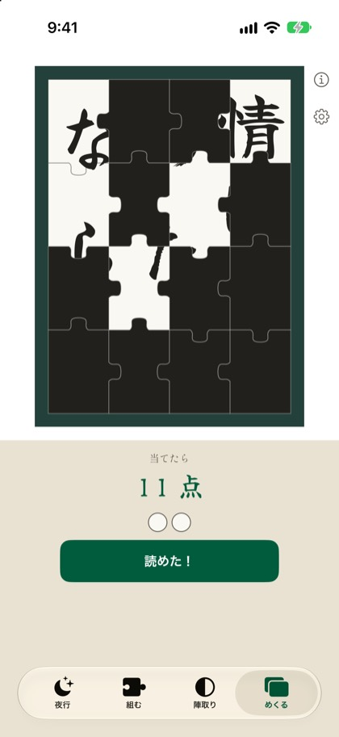
めくって当てる少ない枚数で当てるほど高得点。化け猫を 2 匹めくると 0 点
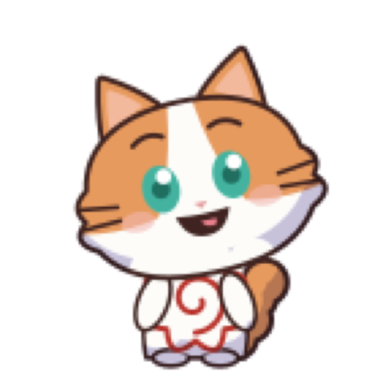
遊び終えると「本当の意味はどっち？」の 2 択が出て、正しいほうに朱が入ります。翌日のおさらいと、友だちへの出題もできます。
- 1 日 5 問まで無料
- 300 円の買い切り
- 広告なし
- iOS 26 以降
ゲーム
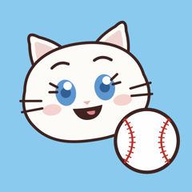
ことねこ野球盤
公開の準備中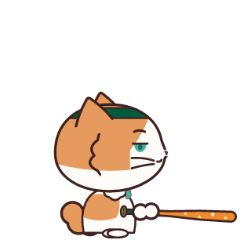
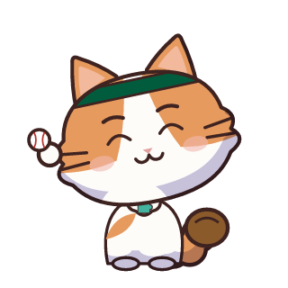
- 3 匹ずつ 3 組に分かれた猫が、2 回までの試合をします
- 打つのも投げるのも、画面を叩くだけです。魔球と技もあります
- 「1 打席だけ挑戦」の 5 つの場面と、猫どうしの試合の観戦もあります
- 試合は 1 日 5 回まで無料です。300 円の買い切りで上限がなくなります。1 打席の挑戦と観戦は、いつでも無料です
9 匹の猫たち
ことねこ
しろとふじの、二人組のアイドルです。
- しろ
- だいだい
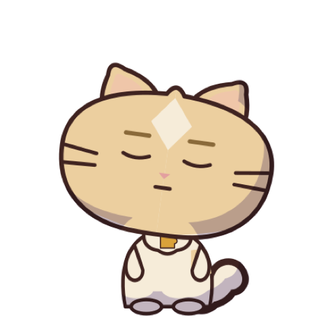
クリーム- ふじ
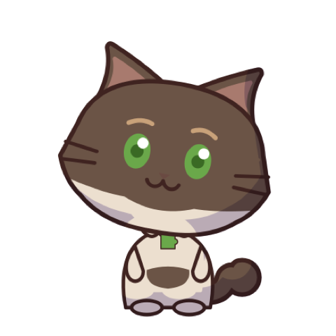
こげちゃ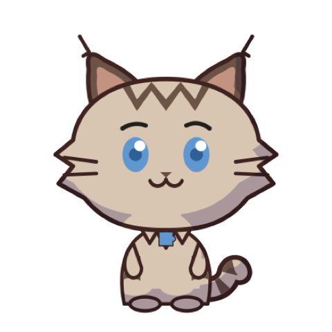
しま- あおはい
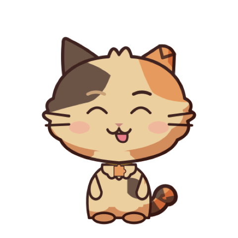
みけ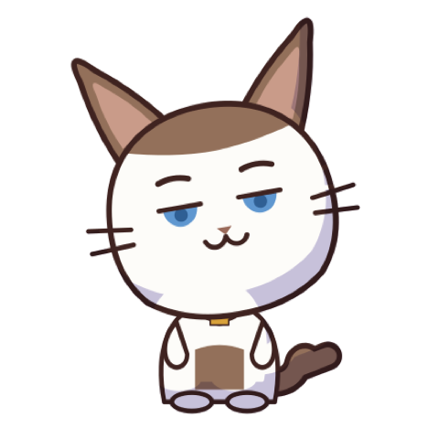
ぼうし